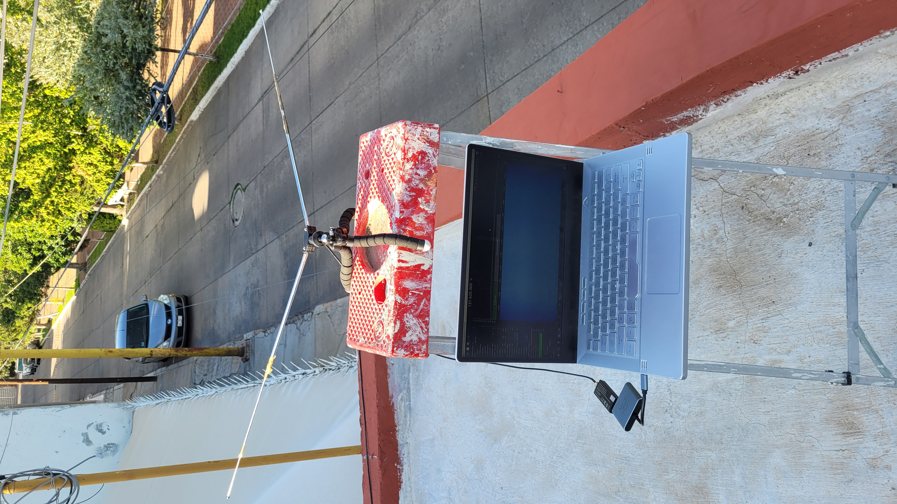
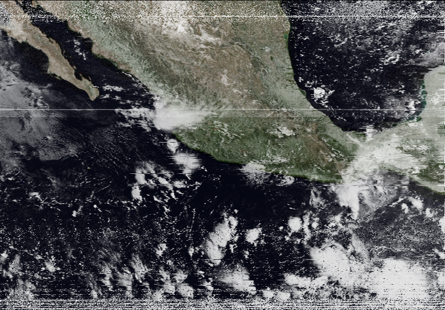

Radio Shennanigans

Recieving NOAA-15 APT
Equipment
- My laptop
- RTL SDR Blog V4
Satellite Communication
Did you know you can download images from satellites with a $40 radio kit.
I haven't done it in a while, but here some images I got:
Image downloaded from NOAA-15 as I recieved it.

Image downloaded from NOAA-15 (colorized)
beard.biz - Return to Home